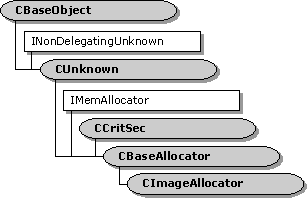

description: The CImageAllocator class implements an allocator that manages GDI device-independent bitmaps (DIBs). This class derives from the CBaseAllocator class. It creates media samples that are implemented using the CImageSample class. ms.assetid: edda34a5-3916-4a41-9e2f-a19f12df0947 title: CImageAllocator class (Winutil.h) ms.topic: reference ms.date: 4/26/2023 topic_type:
[The feature associated with this page, DirectShow, is a legacy feature. It has been superseded by MediaPlayer, IMFMediaEngine, and Audio/Video Capture in Media Foundation. Those features have been optimized for Windows 10 and Windows 11. Microsoft strongly recommends that new code use MediaPlayer, IMFMediaEngine and Audio/Video Capture in Media Foundation instead of DirectShow, when possible. Microsoft suggests that existing code that uses the legacy APIs be rewritten to use the new APIs if possible.]

The CImageAllocator class implements an allocator that manages GDI device-independent bitmaps (DIBs). This class derives from the CBaseAllocator class. It creates media samples that are implemented using the CImageSample class.
An allocator is shared by two connected pins, but is always owned by one of the filters in the connection. A filter that uses CImageAllocator must keep track of whether the allocator was provided by itself or by the other filter. If the allocator was provided by itself, the owning filter can rely on the fact that all media samples from the allocator are CImageSample objects. It can therefore use the CImageSample object to obtain information about the DIB, which is stored in a DIBDATA structure.
The owning filter should call NotifyMediaType whenever the media type changes.
| Protected Member Variables | Description |
|---|---|
| m_pFilter | Pointer to the owning filter. |
| m_pMediaType | Pointer to the current media type. |
| Protected Methods | Description |
| Alloc | Allocates memory for the buffers. |
| CheckSizes | Checks allocator properties against the current media type. |
| CreateDIB | Creates a DIB. |
| CreateImageSample | Creates a media sample. Virtual. |
| Free | Releases all of the buffer memory. |
| Public Methods | Description |
| CImageAllocator | Constructor method. |
| NotifyMediaType | Informs the object of the current media type. |
| IMemAllocator Methods | Description |
| SetProperties | Specifies the number of buffers to allocate and the size of each buffer. |
| Requirement | Value |
|---|---|
| Header | Winutil.h (include Streams.h) |
| Library | Strmbase.lib (retail builds); Strmbasd.lib (debug builds) |